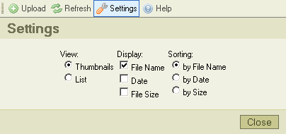

"Asetukset"-nappi työkalurivillä avaa "Asetusruudun", jossa voit konfiguroida ja muokata CKFinderia. Tässä kuvaruutukaappaus:

Kaikki asetukset tallennetaan hyödyntäen selaimen evästeitä (cookies). Evästeet, "keksit", ovat pieniä tiedostoja, jotka sisältävät käyttäjäkohtaisia konfigurointiasetuksia. Kullekin sivustolle on oma evästeensä.
Napsauta "Sulje"-nappia tai "Asetukset"-nappia toistamiseen sulkeaksesi asetusruudun.
Kaikki konfigurointivalinnat liittyvät tiedostoruutuun. Niitä käytetään tietoruudun informaation esittämistavan valitaan. Tiedostoruutu reagoi välittömästi asetusmuutoksiin.
Hallinnoi näkymätyypin valintaa tiedostoruudussa:
Asettaa näytettävän informaation määrän tiedostoruudulle. Esimerkkinä näytetään alla vaihtoehdot eri informaatiomäärävalinnoilla:
|
|
|
|
|
Asettaa järjestyksen, jossa tiedostot näytetään: aakkosjärjestyksessä tiedostonimien perusteella, tiedoston luontipäivämäärän mukaan (uusimmat ensin) tai tiedostokoon mukaisesti.